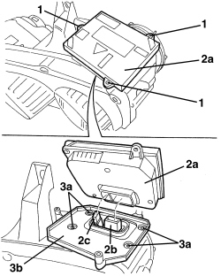
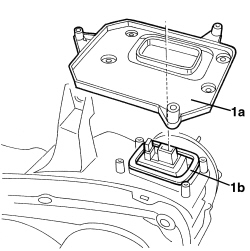

5540B43 CONTROL UNIT FOR ONE RIGHT GAS DISCHARGE LIGHT CLUSTER ONE LH OR RH - R.R. WITH LIGHT CLUSTER REMOVED
- Path
- Procedures > 55 ELECTRICAL EQUIPMENT > 5540 EXTERIOR LIGHTING > 5540B HEADLAMPS > 5540B43 CONTROL UNIT FOR ONE RIGHT GAS DISCHARGE LIGHT CLUSTER ONE LH OR RH - R.R. WITH LIGHT CLUSTER REMOVED
- Kind
- repair procedure (removal / refitting; the operation number is the code)
- Applies to
- all engines; all production periods
- Interactive page
- https://sloeber94.github.io/elrnDB-aBrrSpdr/en/#/946002394
Applies to: all engines; all production periods
 Removing
Removing
 Refitting
Refitting1. Loosen the control unit retaining bolts.
2. Remove control unit (2a), disconnecting electrical connections (2b) and (2c).
3. If necessary, undo the bolts (3a) and remove the control unit mount (3b).

Applies to: all engines; all production periods
Refitting
Removing- Check that the control unit is not damaged.
1. If removed from mount (1a), check that seal (1b) and the support surface on mount (1a) are clean and efficient before refitting.
2. Fit mount (1a) in place and secure it using the bolts.

Applies to: all engines; all production periods
- Position the control unit in its seat and do up the electrical connections.
- Tighten the control unit bolts.